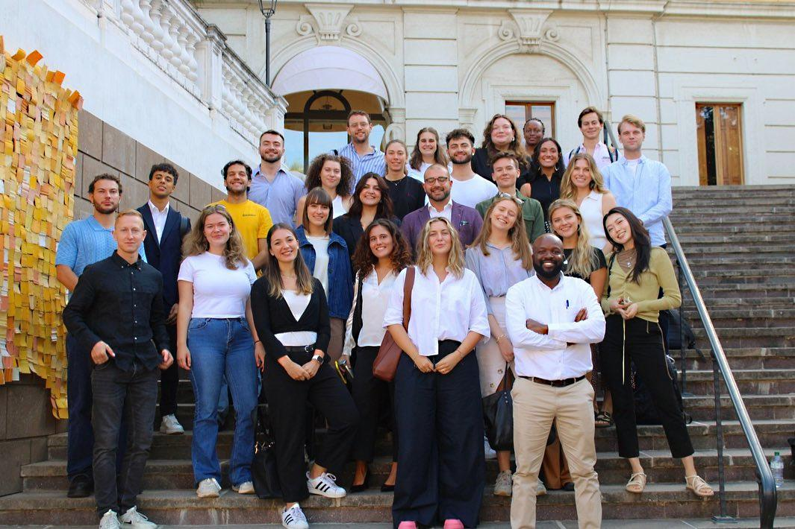
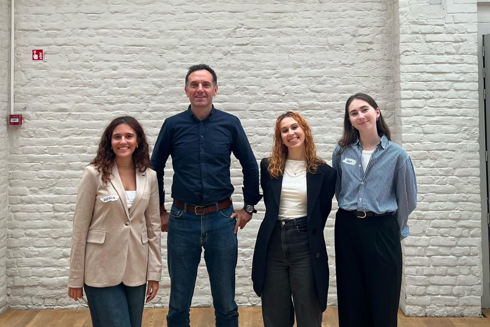
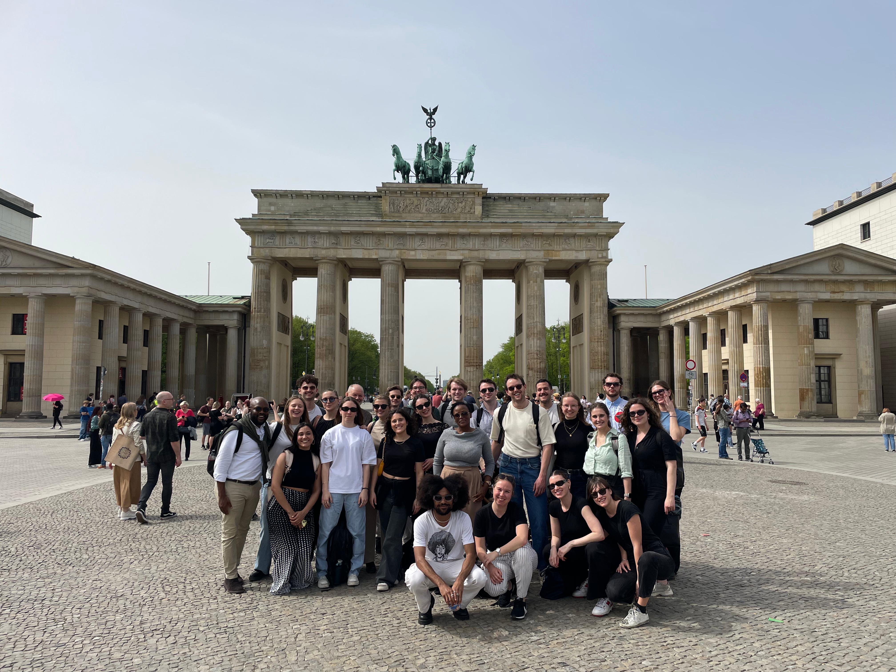
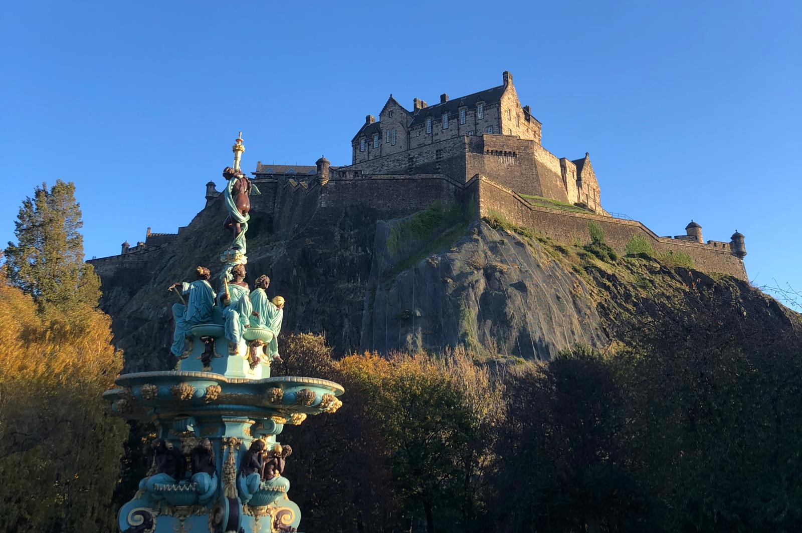

Nine cities. One way of thinking.
International experience is not simply a line on my CV. It has shaped how I think.
Select a year to see where that chapter happened. The through-line: a base in Rome, graduate study and policy research across Europe, and work that has steadily widened — from Edinburgh to Astana to Los Angeles.
Edinburgh / Rome
Erasmus+ exchange at the University of Edinburgh, during the Luiss BA.
Edinburgh
Amnesty International — campaigns on intimate partner violence.
Toronto (remote)
Correspondent writing begins for the Organization for World Peace.
Rome / Edinburgh
Completing the BA in Philosophy, Politics and Economics at Luiss.
Astana / Toronto (remote)
EU columns for The Astana Times; correspondent writing for the Organization for World Peace.
Rome / Brussels / Berlin / Nice
Joint MA in Global Economic Governance and Public Affairs (Luiss + CIFE), across four cities.
Brussels
Policy research and analysis with Dreamocracy; contributing author at the Center for Behavioral Decisions (Prague, remote).
Rome
Director of Madama Louise, the Luiss university newspaper.
Rome
ESG, CSRD/ESRS and behavioural communication consulting with Disal Consulting.
Brussels / Nice
Public-interest policy research with Dreamocracy, including the 70-attendee emotions-in-policymaking workshop; AI governance research for the World AI Film Festival.
Rome
Consulting across policy, ESG and communication.
Los Angeles
Co-founding and operating MemSurf, an AI-native learning app.
The same questions, seen from different places
Studying and working across these cities means having seen the same questions from different institutional vantage points: the EU from inside Brussels and from a Central Asian newsroom's perspective; sustainability from a regulator's frame and from the data architecture of a multinational; technology from European policy debates and from a startup in California.
That habit — deliberately switching vantage points — is probably the most useful thing the geography has taught me.
Places, eventually in photographs




